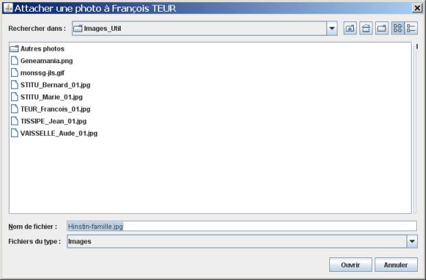
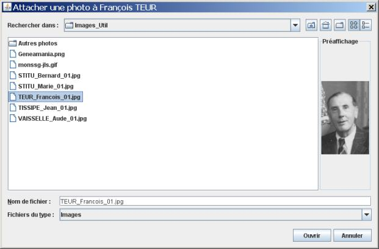
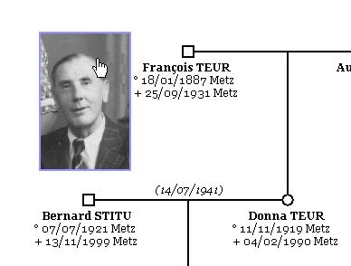
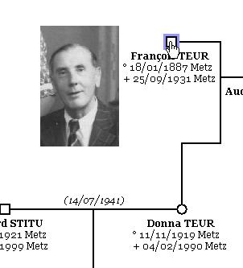

Ajout de photo - Déplacement - Suppression
Les images peuvent être des photos, des dessins, des documents scannés, bref, tout fichier de type JPEG, GIF ou PNG. Les images sont liées à une personne.
Pour ajouter une image, il faut sélectionner une personne. En cliquant sur le bouton  . GénéGraphe ouvre une fenêtre pour choisir l'image à utiliser.
. GénéGraphe ouvre une fenêtre pour choisir l'image à utiliser.

Quand vous cliquez sur une image, elle s'affiche à droite de la liste des fichiers.

Quand vous cliquez sur le bouton Ouvrir, l'image s'ajoute à l'arbre courant.
Vous pouvez placer une image là où vous le souhaitez. Il suffit de cliquer dessus et de la déplacer.

Si vous déplacer la personne, l'image conservera la même position par rapport la personne.

Une image se supprime comme n'importe quel objet, voir le chapitre sur la suppression d'objet.